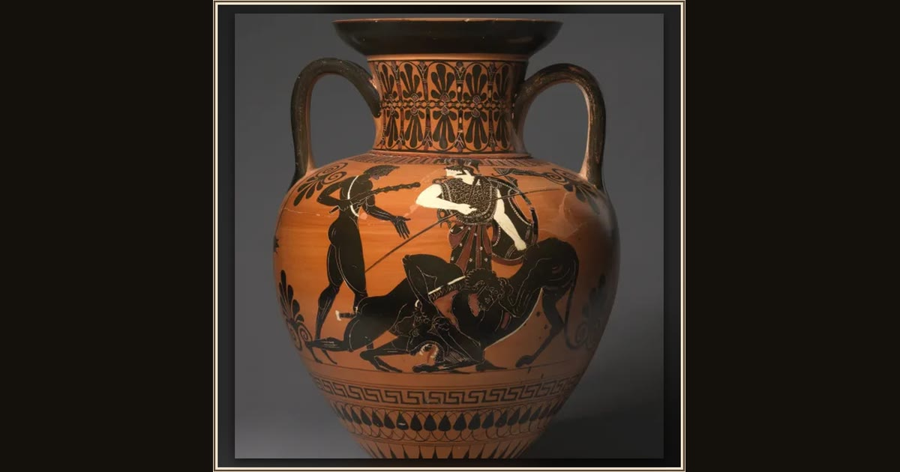

Black-Figure Neck-Amphora (Storage Vessel): Herakles and Nemean Lion (A); Dionysos, Satyrs, and Maenads (B)
Painter of Berlin 1899 (Greek, Attic) · 515–510 BCE · cma
The vase shows Herakles grappling a lion. The chorus begins his labours with the lion he killed and then wore as a skin (360–363). Explore its place in Euripides's Plays, Heracles, line 362.